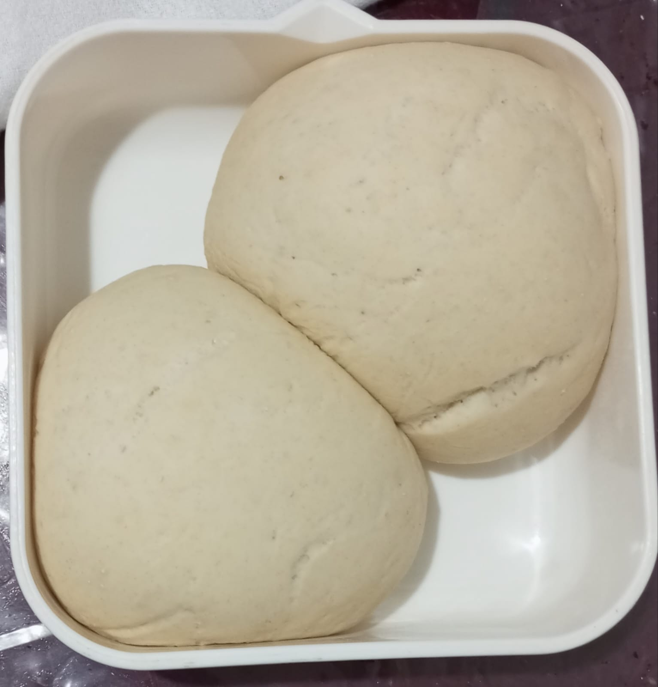
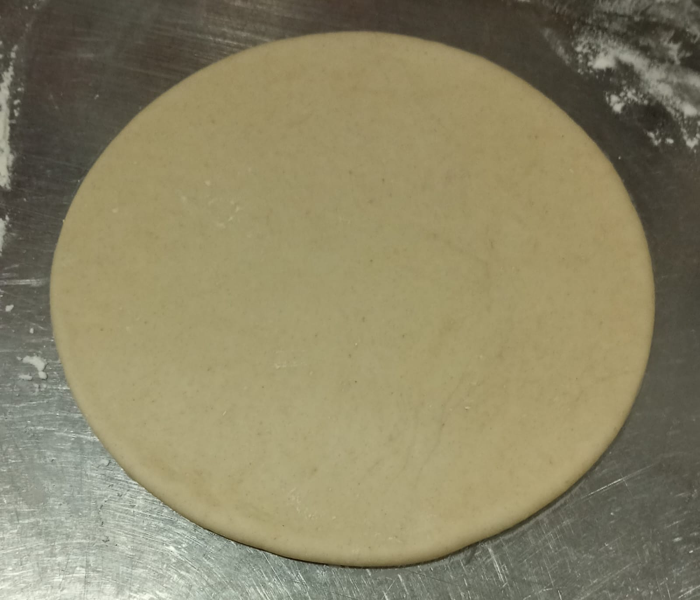
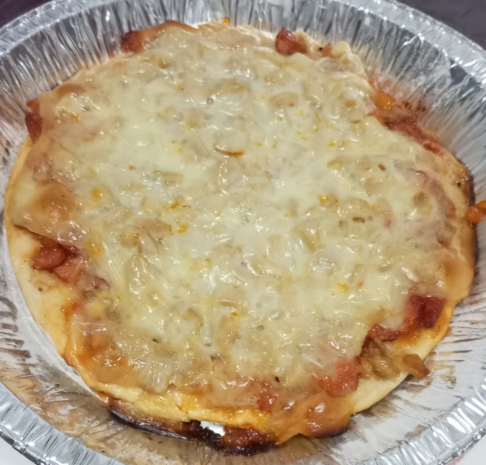
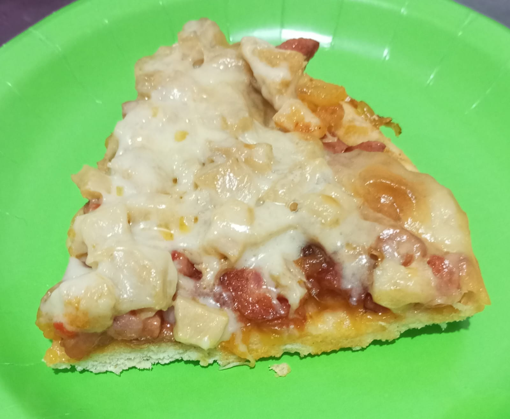

PREPARACION
MASA
Mezclar muy bien el agua tibia, la levadura y el aceite de oliva y la pizca de sal, luego añadir la harina de trigo y amasar en una superficie limpia y esparcir harina para evitar que la masa se pegue, por 5 minutos sin para hasta que la masa este homogenea y lisa, armar una bola, reservar en un recipiente y tapar con trapo por 45 minutos. Al cumplir este tiempo estirar muy bien, con las manos y un rodilo, para así darle la forma circular.


PREPARACION
ADICIONES
Cocinar el mondongo con los condimentos y especies, hasta que quede con una consistencia suave (blando), bajar del fuego, dejar enfriar y luego picarlo finamente.
Pelar y picar la piña, colocarla a fuego lento con el azucar a fuego medio hasta melar.
Picar finamente el pimenton, la cebolla y las salchichas, sofreir cada ingrediente por separado, por ultimo mezclarlos con la salsa de tomate y sofreir por un minuto, lista la salsa.
Luego de estirar y dar forma a la masa (base de la pizza), colocarle la salsa, luego el mondongo y finalmente el queso, colocar en el horno aproximadamente de 10 a 15 minutos.
Pasado este tiempo, sacar y disfrutar!!!

